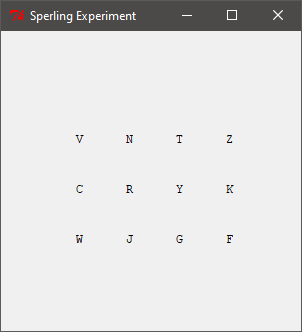

Unit 3: Attention
This unit is concerned with developing a better understanding of how perceptual attention works in ACT-R, particularly as it is concerned with visual attention.
3.1 Visual Locations
Here is the window showing the initial screen for the example task in this unit.

When a display like that is generated using the ACT-R GUI interface tools (AGI) and is presented to a model, a representation of all the visual information in the window is recorded in a visual icon maintained by the vision module of the model. One can view the contents of this visual icon using the “Visicon” button in the ACT-R Environment or with the print-visicon command (using the print-visicon function at the ACT-R prompt or the print_visicon function in the actr module of the Python interface):
Name Att Loc TEXT KIND COLOR WIDTH VALUE HEIGHT SIZE
----------------- --- -------------- ---- ---- ----- ----- ----- ------ ----------
VISUAL-LOCATION0 NEW (380 406 1080) T TEXT BLACK 7 "V" 10 0.19999999
VISUAL-LOCATION1 NEW (380 456 1080) T TEXT BLACK 7 "C" 10 0.19999999
VISUAL-LOCATION2 NEW (380 506 1080) T TEXT BLACK 7 "W" 10 0.19999999
VISUAL-LOCATION3 NEW (430 406 1080) T TEXT BLACK 7 "N" 10 0.19999999
VISUAL-LOCATION4 NEW (430 456 1080) T TEXT BLACK 7 "R" 10 0.19999999
VISUAL-LOCATION5 NEW (430 506 1080) T TEXT BLACK 7 "J" 10 0.19999999
VISUAL-LOCATION6 NEW (480 406 1080) T TEXT BLACK 7 "T" 10 0.19999999
VISUAL-LOCATION7 NEW (480 456 1080) T TEXT BLACK 7 "Y" 10 0.19999999
VISUAL-LOCATION8 NEW (480 506 1080) T TEXT BLACK 7 "G" 10 0.19999999
VISUAL-LOCATION9 NEW (530 406 1080) T TEXT BLACK 7 "Z" 10 0.19999999
VISUAL-LOCATION10 NEW (530 456 1080) T TEXT BLACK 7 "K" 10 0.19999999
VISUAL-LOCATION11 NEW (530 506 1080) T TEXT BLACK 7 "F" 10 0.19999999
That command prints the information for all of the features that are available for the model to find. That information is a combination of the internal attentional status and the information from chunks that represent the locations and the objects at those locations. The specific features of an item can vary, and they are based on the source of those features. The features shown above: text, kind, color, width, value, height, and size, are the ones that are created for text items by the AGI experiment window device.
3.1.1 Visual-Location Requests
The features shown in the visicon are the items searched when a visual-location request is made. When requesting the visual location of an object any of the features available in the visicon may be used in the request. If a feature matches the request, then a chunk with that feature’s location information is placed into the visual-location buffer. If there are no objects which match the request, then a failure will be signaled for the visual-location buffer. If there is more than one item in the visicon that matches the request, the one most recently added to the visicon (the newest one) will be chosen. If multiple items also match on their recency, then one will be picked randomly among those items.
In the last unit we only used the request parameter :attended when making a visual-location request. We will expand on the use of :attended in this unit. We will also provide details on specifying slots in a visual-location request, and show another request parameter available for the visual-location requests called :nearest.
3.1.2 The Attended Test in More Detail
The :attended request parameter was introduced in unit 2. It tests whether or not the model has attended the object at that location, and the possible values are new, nil, and t.1 Very often we use the fact that attention tags elements in the visual display as attended to enable us to draw attention to the previously unattended elements. Consider the following production:
(p find-random-letter
=goal>
isa read-letters
step find
==>
+visual-location>
:attended nil
=goal>
step attend)
In its action, this production requests the visual location of an object that has not yet been attended. Otherwise, it places no preference on the location to be found. After a feature is attended (with a visual buffer request to move-attention), it will be tagged as attended t and this production’s request will not return the location of such an object.
3.1.2.1 Finsts
There is a limit to the number of objects which can be tagged as attended t, and there is also a time limit on how long an item will remain marked as attended t. These attentional markers are called finsts (INSTantiation FINgers) and are based on the work of Zenon Pylyshyn. The default number of finsts provided by the vision module is four, and the default decay time of a finst is three seconds. Thus, at any time there can be no more than four visual objects marked as attended t, and after three seconds the attended status of an item will revert from t to nil. Also, when attention is shifted to an item that would require more finsts than there are available the oldest one is reused for the new item i.e. if there are four items marked with finsts and you move attention to a fifth item the first item that had been marked as attended will no longer be marked as attended so that the fifth item can be marked as attended. Because the default number of finsts is small, productions like the one above are not very useful for modeling tasks with a large number of items on the screen because the model will end up revisiting items very quickly. The number of finsts and the length of time that they persist can be changed using parameters (which are described in the code document for this unit). Thus, one solution is to just set those parameters to values which are large enough so that the model can just rely on finsts to do the task. However, changing architectural parameters like those is not recommended without a good reason since the default values typically represent a human performance constraint. Also, keeping the number of parameters one needs to change for a model as small as possible is generally desired. After discussing some of the other specifications one can use in a request we will come back to ways to work with the limited set of finsts.
3.1.3 Visual-location slots
This is the chunk-type used to specify the location chunks for the text items created by the experiment window device (other devices may use different slots to represent locations):
(chunk-type visual-location screen-x screen-y distance kind color value height width size)Those slots hold the location information for the features in the visicon shown above and that chunk-type could be used to declare the desired slots when making a visual-location request. The screen-x and screen-y slots represent the location based on its x and y position on the screen and are measured in pixels. The upper left corner of the screen is screen-x 0 and screen-y 0 with x increasing from left to right and y increasing from top to bottom. The location of an item depends both upon where it is located within its window and where that window itself is located. The distance slot, which is also measured in pixels, represents the distance to the screen. The default distance from the model to the screen is 15 inches (1080 pixels assuming a screen that has 72 pixels per inch), but there are parameters which can change the distance and the pixels per inch setting.
The height and width slots hold the dimensions of the item measured in pixels. The size slot holds the approximate area covered by the item measured in degrees of visual angle squared. These values provide the general shape and size of the item on the display.
The color slot holds a representation of the color of the item. This will be a symbolic value like black or red which names a chunk that has been created by the vision module representing the color.
The kind slot specifies a general classification of the item, like text or line, which are also chunks created by the vision module.
The value slot of the chunk placed in the visual-location buffer will be a general representation of the item, just like the kind slot. The information shown for the value in the visicon is actually the information from the visual object at the location. That information can be used when making the request for a visual location, but the value itself will not be not available to the model until it attends to the item i.e. the model can request a visual location which has a value of “v” on the display, but the model must move its attention to that location using a visual request to actually encode the letter “v”.2
3.1.4 Visual-location request specification
A visual-location request may contain any slots which have been created for visual features (both the location and object chunks). Any of the slots may be specified any number of times, and one can use any of the possible slot modifiers (-, <, >, <=, or >=) on the slots. If a location is found that matches all of the constraints provided then a chunk representing that location will be placed into the visual-location buffer. If there is no location in the visicon which satisfies all of the constraints then the visual-location buffer will indicate a failure.
3.1.4.1 Exact values
If you know the exact values for the slots you are interested in then you can specify those values directly. This example represents a request to find something that is black and not text at a specific position:
+visual-location>
isa visual-location
screen-x 50
screen-y 124
color black
- kind text
Often however, one does not know the specific information about the location of visual items in advance and things need to be specified more generally in the model.
3.1.4.2 Production variables
Variables from the production can be used in requests instead of specific values. Consider this production which uses a value from a slot in the goal buffer to request the location with a specific color:
(p find-by-color
=goal>
target =color
==>
+visual-location>
color =color)
Variables from the production can be used just like specific values along with modifiers. Assuming that the LHS of the production binds the variables =x, =y, and =kind this would be a valid request:
+visual-location>
kind =kind
screen-x =x
screen-y =y
3.1.4.3 General values
When the slot being tested holds a number it is possible to use the slot modifiers <, <=, >, and >= to test a slot’s value. Thus to request a location that is to the right of screen-x 50 and at or above screen-y 124 one could use the request:
+visual-location>
> screen-x 50
<= screen-y 124
In fact, one could use two modifiers for each of the slots to restrict a request to a specific range of values. For instance to request an object which was located somewhere within a box bounded by the corners 10,10 and 100,150 one could specify:
+visual-location>
> screen-x 10
< screen-x 100
> screen-y 10
< screen-y 150
3.1.4.4 Relative values
If you are not concerned with any specific values, but care more about relative properties then there are also ways to specify that. You can use the values lowest and highest in the specification of a visual-location request for any slot which has a numeric value. Of the chunks which match the other constraints the one with the numerically lowest or highest value for that slot will then be the one found.
In terms of screen-x and screen-y, remember that for the experiment window device the x coordinates increase from left to right, so lowest corresponds to leftmost and highest rightmost, while y coordinates increase from top to bottom, so lowest means topmost and highest means bottommost.
If this is used in combination with :attended it can allow the model to find things on the screen in an ordered manner. For instance, to read a line of text from left to right a model could use a visual-location request like this:
+visual-location>
:attended nil
screen-x lowest
assuming of course that it also moves attention to the items so that they become attended and that there are sufficient finsts to tag everything along the way.
If multiple slots in the request specify the relative constraints of lowest and/or highest then first, all of the non-relative values are used to determine the set of items to be tested for relative values. Then the relative tests are performed one at a time in the order provided to reduce the matching set. Thus, this request:
+visual-location>
width highest
screen-x lowest
color red
will first consider all items which are red because that is not a relative test. Then it would reduce that to the set of items with the highest width (widest) and then from those it would pick the one with the lowest screen-x coordinate (leftmost). That may not produce the same result as this request given the same set of visicon features since the screen-x and width constraints will be applied in a different order:
+visual-location>
screen-x lowest
width highest
color red
3.1.4.5 The current value
It is also possible to use the special value current in a visual-location request. That means the value of the slot must be the same as the value for the corresponding slot of the location of the currently attended object (the one resulting from the most recent visual request to move-attention). The value current may also be tested using the modifiers. Therefore, this request:
+visual-location>
screen-x current
< screen-y current
- color current
attempts to find a location which has the same x position as the currently attended item, is higher on the screen than the currently attended item (the y coordinate is lower), and is a different color than the currently attended item.
If the model does not have a currently attended object (it has not yet attended to anything) then the tests for current are ignored.
3.1.5 The :nearest request parameter
Like :attended, there is another request parameter available in visual-location requests. The :nearest request parameter can be used to find the items closest to the currently attended location or to some other location. To find the location of the object nearest to the currently attended location we can again use the value current:
+visual-location>
:nearest current
If a location nearest to some other location is desired that other location can be provided as the value for :nearest instead of current:
+visual-location>
:nearest =some-location
If there are constraints other than :nearest specified in the request then they are all tested first and the nearest of the locations that matches all of those other constraints is the one that will be placed into the buffer. The determination of “nearest” is based on the straight line distance using the coordinates of the items, which would be the screen-x, screen-y, and distance slots for the experiment window device’s features.
3.1.6 Ordered Search
Above it was noted that a production using this visual-location request (in conjunction with appropriate attention shifts) could be used to read words on the screen from left to right:
+visual-location>
:attended nil
screen-x lowest
However, if there are fewer finsts available than words to be read that production will result in a loop that reads only one more word than there are finsts. By using the tests for current and lowest one could have the model perform the search from left to right without using the :attended test:
+visual-location>
> screen-x current
screen-x lowest
That will always be able to find the next word to the right of the currently attended one regardless of how many finsts are available and in use. To deal with multiple lines of items to be read left to right one could add ‘screen-y current’ to that request along with an additional production for moving to the next line when the end of the current one is reached.
By using the relative constraints along with the :nearest request parameter and the current indicator a variety of ordered search strategies can be implemented in a model which do not depend upon finsts to be able to search all available features.
3.2 The Sperling Task
The example model for this unit can perform the partial report version of the Sperling experiment which demonstrates the effects of perceptual attention. The model is found in the sperling-model.lisp file in unit3 of the tutorial and the experiment code is in the sperling file for each of the provided implementations. Loading or importing the experiment code (as appropriate) will automatically load the model into ACT-R. In the Sperling experiment subjects are briefly presented with a set of letters and must try to report them. Subjects briefly see displays of 12 letters arranged in a 4 x 3 grid like those shown in the image at the beginning of this unit. The subject is cued sometime after the display comes on as to which of the three rows of letters they must report. The delay of the cue is either 0, 0.15, 0.3, or 1 second after the display appears. Then, after 1 second of total display time, the screen is cleared and the subject is to report the letters from the cued row. In the version we have implemented the responses are to be typed and the space bar pressed to indicate completion of the reporting. For the cuing, the original experiment used a tone with a different frequency for each row and the model will hear simulated tones while it is doing the task. This task does not have a version which you can perform because the AGI does not currently provide a means of generating real tones.
In the original experiment the display was only presented for 50ms and it is generally believed that there is an iconic visual memory that continues to hold the stimuli for some time after features are removed from the actual display which people can continue to process for that 1 second before responses are required. ACT-R’s vision module does not currently provide a persistent visual iconic memory – it can only process the items immediately available from the device. Thus, for this task we have simulated this persistent visual memory for ACT-R by having the display actually stay on for longer than 50ms. It will be visible for a random period of time between 0.9 to 1.1 seconds to simulate that process for the model.
One thing you may notice when looking at this model is that it does not use the imaginal buffer, as described in the previous unit, to hold the problem representation separate from the control information. Instead, all of the task relevant information is kept in the goal buffer’s chunk. That was done primarily to keep the productions simpler so that it is easier to follow the details of the attention mechanisms which are the focus of this unit. As an additional task for this unit you could rewrite the productions for this example model to represent the information more appropriately using both the goal and imaginal buffers.
To run the model through a single trial of the task you can use the sperling-trial function in the Lisp version and the trial function in the sperling module of the Python version. Those functions require a single parameter which indicates the delay in seconds for the signal tone which indicates the row to be reported. Here are examples of running that in both implementations specifying a delay of 0.15 seconds:
? (sperling-trial .15)
>>> sperling.trial(.15)
This is the trace which is generated when that trial is run (the :trace-detail parameter is set to low in the model). In this trial the sound is presented .15 seconds after onset of the display and the target row is the middle one.
0.000 GOAL SET-BUFFER-CHUNK GOAL (ISA READ-LETTERS STEP ATTENDING UPPER-Y 400 LOWER-Y 600) NIL
0.000 VISION SET-BUFFER-CHUNK VISUAL-LOCATION VISUAL-LOCATION1 NIL
0.050 PROCEDURAL PRODUCTION-FIRED ATTEND-MEDIUM
0.135 VISION SET-BUFFER-CHUNK VISUAL TEXT0
0.185 PROCEDURAL PRODUCTION-FIRED ENCODE-ROW-AND-FIND
0.185 VISION SET-BUFFER-CHUNK VISUAL-LOCATION VISUAL-LOCATION3
0.200 AUDIO SET-BUFFER-CHUNK AURAL-LOCATION AUDIO-EVENT0 NIL
0.235 PROCEDURAL PRODUCTION-FIRED ATTEND-HIGH
0.285 PROCEDURAL PRODUCTION-FIRED DETECTED-SOUND
0.320 VISION SET-BUFFER-CHUNK VISUAL TEXT1
0.370 PROCEDURAL PRODUCTION-FIRED ENCODE-ROW-AND-FIND
0.370 VISION SET-BUFFER-CHUNK VISUAL-LOCATION VISUAL-LOCATION2
0.420 PROCEDURAL PRODUCTION-FIRED ATTEND-LOW
0.505 VISION SET-BUFFER-CHUNK VISUAL TEXT2
0.555 PROCEDURAL PRODUCTION-FIRED ENCODE-ROW-AND-FIND
0.555 VISION SET-BUFFER-CHUNK VISUAL-LOCATION VISUAL-LOCATION0
0.570 AUDIO SET-BUFFER-CHUNK AURAL TONE0
0.605 PROCEDURAL PRODUCTION-FIRED ATTEND-HIGH
0.655 PROCEDURAL PRODUCTION-FIRED SOUND-RESPOND-MEDIUM
0.690 VISION SET-BUFFER-CHUNK VISUAL TEXT3
0.740 PROCEDURAL PRODUCTION-FIRED ENCODE-ROW-AND-FIND
0.740 VISION SET-BUFFER-CHUNK VISUAL-LOCATION VISUAL-LOCATION4
0.790 PROCEDURAL PRODUCTION-FIRED ATTEND-MEDIUM
0.875 VISION SET-BUFFER-CHUNK VISUAL TEXT4
0.925 PROCEDURAL PRODUCTION-FIRED ENCODE-ROW-AND-FIND
0.925 VISION SET-BUFFER-CHUNK VISUAL-LOCATION VISUAL-LOCATION1
0.975 PROCEDURAL PRODUCTION-FIRED ATTEND-MEDIUM
1.110 PROCEDURAL PRODUCTION-FIRED START-REPORT
1.110 GOAL SET-BUFFER-CHUNK GOAL (ROW MEDIUM)
1.110 DECLARATIVE SET-BUFFER-CHUNK RETRIEVAL VISUAL-CHUNK0-0
1.160 PROCEDURAL PRODUCTION-FIRED DO-REPORT
1.160 MOTOR PRESS-KEY KEY C
1.160 DECLARATIVE SET-BUFFER-CHUNK RETRIEVAL VISUAL-CHUNK0-4
1.760 PROCEDURAL PRODUCTION-FIRED DO-REPORT
1.760 MOTOR PRESS-KEY KEY R
1.760 DECLARATIVE RETRIEVAL-FAILURE
2.260 PROCEDURAL PRODUCTION-FIRED STOP-REPORT
2.260 MOTOR PRESS-KEY KEY SPACE
2.560 ------ Stopped because no events left to processAlthough the sound is presented at 0.150 seconds into the trial it does not actually affect the actions of the model until the sound-respond-medium production fires at 0.655 seconds to encode the tone. One of the things we will discuss is what determines the delay of that response. Prior to that time the model is finding letters anywhere on the screen, but after the sound is encoded the search is restricted to the target row indicated. After the display disappears, the production start-report fires which initiates the typing of the letters which the model remembers having attended from the target row.
3.3 Visual Attention
like the models from the last unit, there are three steps that the model must perform to encode visual objects. It must find the location of an object, shift attention to that location, and then harvest the chunk which encodes the attended object. In the last unit this was done with three separate productions, but in this unit, because the model is trying to do this as quickly as possible the encoding and request to find the next are actually combined into a single production, encode-row-and-find, which will be described later. In addition, for the first item’s location there is no production that does an initial find.
3.3.1 Buffer Stuffing
Looking at the trace we see that the first production to fire in this model is attend-medium:
0.050 PROCEDURAL PRODUCTION-FIRED ATTEND-MEDIUMHere is the definition of that production:
(p attend-medium
=goal>
isa read-letters
step attending
=visual-location>
isa visual-location
> screen-y 450
< screen-y 470
?visual>
state free
==>
=goal>
location medium
step encode
+visual>
cmd move-attention
screen-pos =visual-location)On its LHS it has a test for a chunk in the visual-location buffer, and it matches and fires even though there has not been a prior production that fired to make a request to find a location chunk to place into the visual-location buffer. However, there is a line in the trace prior to that which indicates that a chunk was placed into the visual-location buffer:
0.000 VISION SET-BUFFER-CHUNK VISUAL-LOCATION VISUAL-LOCATION1 NILThis process is referred to as “buffer stuffing” and it occurs for both visual and aural percepts. It is a mechanism that allows the perceptual modules to provide an environment driven, or bottom-up, attention ability. When the visual-location buffer is empty and there is a change in the visual scene it can automatically place the location of one of the visual objects into the visual-location buffer. The “NIL” at the end of the set-buffer-chunk line in the trace indicates that this setting of the chunk in the buffer was not the result of a production’s request.
You can specify the conditions used to determine which location, if any, gets selected for the visual-location buffer stuffing using the same conditions you would use to specify a visual-location request in a production. Thus, when the screen is processed, if there is a visual-location that matches that specification and the visual-location buffer is empty that location will be stuffed into the visual-location buffer. The default specification for a location to be stuffed into the buffer is :attended new and screen-x lowest. If you go back and run the previous units’ models you can see that before the first production fires to request a location there is in fact already one in the buffer, and it is the leftmost new item on the screen.
Using buffer stuffing allows the model to detect changes to the visual scene automatically. The alternative method would be to continually request a location that was marked as :attended new, notice that there was a failure to find one, and request again until one was found. One thing to keep in mind is that buffer stuffing will only occur if the buffer is empty. If the model is busy doing something with a chunk in the visual-location buffer then it will not automatically notice a change to the display. If you want to take advantage of buffer stuffing in a model then you must make sure that all requested chunks are cleared from the buffer, but that is typically not a problem because the strict harvesting mechanism that was described in the last unit causes buffers to be cleared automatically when they are tested in a production. The vision module also helps to avoid a chunk staying in the buffer because it will remove a chunk that it has stuffed into the visual-location buffer after 0.5 seconds if it is still there.
3.3.2 Testing and Requesting Locations with Slot Modifiers
Something else to notice about this production is that the buffer test of the visual-location buffer shows modifiers being used when testing slots for values. These tests allow you to do a comparison when the slot value is a number, and the match is successful if the comparison is true. The first one (>) is a greater-than test. If the chunk in the visual-location buffer has a value in the screen-y slot that is greater than 450, it is a successful match. The second test (<) is a less-than test, and works in a similar fashion. If the screen-y slot value is less than 470 it is a successful match. Testing on a range of values like this can be important for the visual locations because the exact location of a piece of text in the visual icon is determined by its “center” which is dependent on the font type and size. Thus, instead of figuring out exactly where the text is at in the icon (which can vary from letter to letter or even for the same letter under different fonts) the model is written to accept the text in a range of positions to indicate which row it occupies.
After attention shifts to a letter on the screen, the production encode-row-and-find can harvest the visual representation of that object. It modifies that chunk to indicate which row it is in and requests the next location:
(p encode-row-and-find
=goal>
isa read-letters
location =pos
upper-y =uy
lower-y =ly
=visual>
==>
=visual>
status =pos
-visual>
=goal>
location nil
step attending
+visual-location>
:attended nil
> screen-y =uy
< screen-y =ly)The production places the row of the letter, the value of the variable =pos which gets bound to the value from the location slot of the chunk in the goal buffer, into the status slot of the chunk currently in the visual buffer. Later, when retrieving the chunks from declarative memory, the model will restrict itself to recalling items from only the target row. The status slot is used because the AGI defines this chunk-type which has the slots it uses to create the chunks for the visual buffer:
(chunk-type visual-object screen-pos value status color height width)The AGI does not actually use the status slot when it creates the chunk and leaves that slot available for the modeler to use as needed. We do not have to use that slot, but since it is already defined it is convenient to do so. Later in the tutorial we will show how a model can extend chunks with arbitrary slots as it runs.
In addition to modifying the chunk in the visual buffer, it also explicitly clears the visual buffer. This is done so that the now modified chunk goes into declarative memory. Remember that declarative memory holds the chunks that have been cleared from the buffers. Typically, strict harvesting will clear the buffers automatically, but because the chunk in the visual buffer is modified on the RHS of this production it will not be automatically cleared. Thus, to ensure that this chunk enters declarative memory at this time we explicitly clear the buffer.
The production also updates the goal buffer’s chunk to remove the location slot and update the step slot, and it makes a request for a new visual location. The visual-location request uses the < and > modifiers for the screen-y slot to restrict the visual search to a particular region of the screen. The range is defined by the values from the upper-y and lower-y slots of the chunk in the goal buffer. The initial values for the upper-y and lower-y slots are shown in the initial goal created for the model:
(goal-focus (isa read-letters step attending upper-y 400 lower-y 600))Those values cover the whole window, thus the location of any letter that is unattended will be potentially chosen initially. When the tone is encoded, those slots will be updated so that only the target row’s letters will be found. The visual-location request also uses the :attended request parameter to ensure that it finds an item which it has not attended previously (at least not one of the last 4 items attended since that is the default number of finsts).
3.4 Auditory Attention
There are a number of productions responsible for processing the auditory signal in this model which serve as our first introduction to the audio module. Like the vision module, there are also two buffers in the audio module. The aural-location buffer holds the location of an auditory percept and the aural buffer holds the representation of a sound that is attended. However, unlike the visual system we typical need only two steps to encode a sound and not three. This is because usually the auditory field of the model is not crowded with sounds and we can rely on buffer stuffing to place the sound’s location into the aural-location buffer without having to request it. If a new sound is presented, and the aural-location buffer is empty, then the audio-event for that sound (the auditory equivalent of a visual-location) is placed into the buffer automatically. However, there is a delay between the initial onset of the sound and when the audio-event becomes available. The length of the delay depends on the type of sound being presented (tone, digit, word, or other) and represents the time necessary to encode its content. This is unlike the visual-locations which are immediately available.
In this task the model will hear one of the three possible tones on each trial. The default time it takes the audio module to encode a tone sound is 0.050 seconds. The detected-sound production responds to the appearance of an audio-event in the aural-location buffer:
(p detected-sound
=aural-location>
?aural>
state free
==>
+aural>
event =aural-location)Notice that this production does not test the goal buffer. If there is a chunk in the aural-location buffer and the query of the aural buffer for state free is true then this production can fire. On its RHS it makes a request to the aural buffer specifying the event slot. That is a request to shift attention and encode the audio-event provided. The result of that encoding will be a chunk with slots specified by the chunk-type sound being placed into the aural buffer:
(chunk-type sound kind content event)The kind slot is used to indicate the type of sound encoded which could be tone, digit, or word for the built-in sounds, but custom kinds of sound can also be generated for a model. The value of the content slot will be a representation of the sound heard, and how that is encoded is different for different kinds of sounds (the default encoding is that tones encode the frequency, words are encoded as strings, and digits are encoded as a number). The event slot contains a chunk with the audio-event information that was used to attend the sound.
Our model for this task has three different productions to process the encoded sound chunks, one for each of the high, medium, and low tones. The following is the production for the low tone:
(p sound-respond-low
=goal>
isa read-letters
tone nil
=aural>
isa sound
content 500
==>
=goal>
tone low
upper-y 500
lower-y 520)For this experiment a 500 Hertz sound is considered low, a 1000 Hertz sound medium, and a 2000 Hertz sound high. On the RHS this production records the category of the tone presented in the tone slot of the goal buffer’s chunk and also updates the restrictions on the y coordinates for the search to constrain it to the appropriate row (the range of which we have explicitly encoded in this production based on where the experiment code displays the items to keep things simple).
Now we will look at a section of the high detail trace for the same trial where the sound was initiated at 0.15 seconds into the trial to see how the processing of that auditory information progresses. The first action performed by the audio module occurs at time 0.2 seconds:
...
0.135 PROCEDURAL PRODUCTION-SELECTED ENCODE-ROW-AND-FIND
0.150 AUDIO new-sound
0.185 PROCEDURAL PRODUCTION-FIRED ENCODE-ROW-AND-FIND
...
0.185 PROCEDURAL PRODUCTION-SELECTED ATTEND-HIGH
0.200 AUDIO SET-BUFFER-CHUNK AURAL-LOCATION AUDIO-EVENT0 NIL
0.235 PROCEDURAL PRODUCTION-FIRED ATTEND-HIGH
...
0.235 PROCEDURAL PRODUCTION-SELECTED DETECTED-SOUND
...Although the sound was initiated at 0.150 seconds, it takes the audio module 0.05 seconds to detect and encode that a tone has occurred so at time 0.2 seconds it stuffs the audio-event into the aural-location buffer since it is empty. At 0.235 seconds the detected-sound production can be selected in response to the audio event that happened. It could not be selected sooner because the attend-high production was selected at 0.185 seconds (before the tone was available) and takes 50 milliseconds to complete firing at time 0.235 seconds. That leads to the following actions:
...
0.285 PROCEDURAL PRODUCTION-FIRED DETECTED-SOUND
...
0.285 AUDIO ATTEND-SOUND AUDIO-EVENT0-0
...
0.320 PROCEDURAL PRODUCTION-SELECTED ENCODE-ROW-AND-FIND
0.370 PROCEDURAL PRODUCTION-FIRED ENCODE-ROW-AND-FIND
...
0.370 PROCEDURAL PRODUCTION-SELECTED ATTEND-LOW
0.420 PROCEDURAL PRODUCTION-FIRED ATTEND-LOW
...
0.505 PROCEDURAL PRODUCTION-SELECTED ENCODE-ROW-AND-FIND
0.555 PROCEDURAL PRODUCTION-FIRED ENCODE-ROW-AND-FIND
...
0.555 PROCEDURAL PRODUCTION-SELECTED ATTEND-HIGH
0.570 AUDIO AUDIO-ENCODING-COMPLETE AUDIO-EVENT0
0.570 AUDIO SET-BUFFER-CHUNK AURAL TONE0
0.605 PROCEDURAL PRODUCTION-FIRED ATTEND-HIGH
...
0.605 PROCEDURAL PRODUCTION-SELECTED SOUND-RESPOND-MEDIUM
0.655 PROCEDURAL PRODUCTION-FIRED SOUND-RESPOND-MEDIUM
...
0.690 PROCEDURAL PRODUCTION-SELECTED ENCODE-ROW-AND-FIND
...When the detected-sound production completes at 0.285 seconds the aural request is made to shift attention to the sound. The next audio module event in the trace occurs at time 0.57 seconds when the module completes encoding the sound and then puts the chunk in the aural buffer. It took 0.285 seconds from when the request was made until the sound was attended and encoded. The production which harvests that aural buffer chunk, sound-respond-medium, is then selected at 0.605 seconds (after the attend-high production completes which had been selected before the sound chunk was available) and finishes firing at 0.655 seconds. The next production to be selected and fire is encode-row-and-find at time 0.69 seconds because it is waiting for the visual buffer’s chunk to be available. It encodes the last letter that was read and issues a request to find a letter that is in the target row instead of an arbitrary letter since the coordinate locations were updated by sound-respond-medium. Thus, even though the sound is presented at 0.150 seconds it is not until 0.690 seconds, when encode-row-and-find is selected, that it has any effect on the processing of the visual array.
3.5 Typing and Control
After encoding as many letters as it can the model must respond, and this is the production which initiates that:
(P start-report
=goal>
isa read-letters
tone =tone
?visual>
state free
==>
+goal>
isa report-row
row =tone
+retrieval>
status =tone)It makes a request for the goal module to create a new chunk to be placed into the goal buffer rather than just modifying the chunk that is currently there (as indicated by the +goal rather than an =goal). The goal module creates a new chunk immediately in response to a request, unlike the imaginal module which takes time to create a new chunk. This production also makes a retrieval request for a chunk from declarative memory which has the required row in its status slot (as was set by the encode-row-and-find production).
This production’s conditions are fairly general and it can match at many points in the model’s run, but we do not want it to apply as long as there are letters to be processed. Each production has a quantity associated with it called its utility. The productions’ utilities determine which production gets selected during conflict resolution if there is more than one that matches. We will discuss utility in more detail in later units. For now, the important thing to know is that the production with the highest utility among those that match is the one selected and fired. Thus, we can make this production less preferred by setting its utility value low. The command for setting production parameters in a model is spp (set production parameters). It is similar to sgp which is used for the general parameters as discussed earlier in the tutorial. The utility of a production is set with the :u parameter, so the following call found in the model sets the utility of the start-report production to -2:
(spp start-report :u -2)The default utility for productions is 0. Because of that, the start-report production will not be selected as long as there are other productions with a higher utility that match when it does, and in particular that will be as long as there is still something in the target row on the screen to be processed by the productions that encode the screen.
You may also notice that the productions that process the sound are given higher utility values than the default in the model:
(spp detected-sound :u 10)
(spp sound-respond-low :u 10)
(spp sound-respond-medium :u 10)
(spp sound-respond-high :u 10)That is so that the sound will be processed as soon as possible – these productions will be preferred over others that match at the same time.
Once the model starts to retrieve the letters, the following production is responsible for reporting all of the letters recalled from the target row:
(P do-report
=goal>
isa report-row
row =tone
=retrieval>
status =tone
value =val
?manual>
state free
==>
+manual>
cmd press-key
key =val
+retrieval>
status =tone
:recently-retrieved nil)This production fires when an item has been retrieved and the motor module is free. As actions, it presses the key corresponding to the letter retrieved and makes a retrieval request for another letter. Notice that it does not modify the chunk in the goal buffer (which does not get cleared by strict harvesting) and thus this production can fire again once the other conditions are met. Here is a portion of the trace showing this production firing twice in succession:
...
1.160 PROCEDURAL PRODUCTION-FIRED DO-REPORT
1.160 MOTOR PRESS-KEY KEY C
1.160 DECLARATIVE SET-BUFFER-CHUNK RETRIEVAL VISUAL-CHUNK0-4
1.760 PROCEDURAL PRODUCTION-FIRED DO-REPORT
...When there are no more letters to be reported (a retrieval failure occurs because the model can not retrieve any more letters from the target row), the following production applies to indicate it is done by pressing the space bar:
(p stop-report
=goal>
isa report-row
row =row
?retrieval>
buffer failure
?manual>
state free
==>
+manual>
cmd press-key
key space
-goal>)It also clears the chunk from the goal buffer which results in no more productions being able to match causing the run to terminate.
3.6 Declarative Finsts
While doing this task the model only needs to report the letters it has seen once each. One way to do that easily is to indicate which chunks have been retrieved previously so that they are not retrieved again. However, one cannot modify the chunks in declarative memory. Modifying the chunk in the retrieval buffer will result in a new chunk being added to declarative memory with that modified information, but the original unmodified chunk will also still be there. Thus some other mechanism must be used.
The way this model handles that is by taking advantage of the declarative finsts built into the declarative memory module. Like the vision module, the declarative module marks items that have been retrieved with tags that can be tested in the retrieval request. These finsts are not part of the chunk, but can be tested with the :recently-retrieved request parameter in a retrieval request as shown in the do-report production:
(P do-report
=goal>
isa report-row
row =tone
=retrieval>
status =tone
value =val
?manual>
state free
==>
+manual>
cmd press-key
key =val
+retrieval>
status =tone
:recently-retrieved nil)If :recently-retrieved is specified as nil, then only a chunk that has not been recently retrieved (marked with a finst) will be retrieved. In this way the model can exhaustively search declarative memory for items without repeating. That is not always necessary and there are other ways to model such tasks, but it is a convenient mechanism that can be used when needed.
Like the visual system, the declarative module has a default of four finsts which last 3 seconds each, but those can be changed with parameters described in the code document for the unit. In this model the default of four finsts is sufficient, but the duration of 3 seconds is potentially too short because of the time it takes to make the responses. Thus in this model the span is simply set to 10 seconds to avoid potential repeats to keep the model easier to understand since the focus is on visual and aural perception.
3.7 Data Fitting
One can see the average performance of the model run over a large number of trials by using the function sperling-experiment in the Lisp version or the experiment function from the Python version’s sperling module. It requires one parameter which indicates how many presentations of each condition should be performed. However, there are a couple changes to the model that one should make first. The first thing to change is to remove the sgp call that sets the :seed parameter which causes the model to always perform the same trial in the same way, otherwise the performance is going to be identical on every trial. The easiest way to remove that call is to place a semi-colon at the beginning of the line like this:
; (sgp :seed (100 0))In Lisp syntax a semi-colon designates a comment and everything on the line after the semi-colon is ignored, and since the models are based on Lisp syntax you can use a semi-colon to comment out lines of text in an ACT-R model file.
After making that change to the model and then reloading it the experiment will present different stimuli for each trial and the model’s performance can differ from trial to trial. The other change that can be made to the model will decrease the length of time it takes to run the model through the experiment (the real time that passes not the simulated performance timing of the model). That change is to turn off the ACT-R trace so that it does not have to print out all of the events as they are occurring, which is done by setting the :v parameter in the model to nil instead of t:
(sgp :v nil :declarative-finst-span 10)There are also some changes which should be made to the experiment code to significantly reduce the time it takes to run the experiment. Instead of having a real window displayed, the model can interact with a virtual window which is faster, but you will not be able to watch it do the task. Also, because the model is interacting with a real window for you to watch it perform the task it is also currently running in step with real time, but you can also remove the real time constraint to significantly improve how long it takes to run the model through the task. The details on making those changes are not going to be covered here, but can be found in the code document for this unit.
After making the necessary changes you can run the experiment many times to see the model’s average performance and comparison to the human data with respect to the number of items correctly recalled in the different tone onset time conditions. Here are the results from a run of 100 trials in both the Lisp and Python implementations:
? (sperling-experiment 100)
CORRELATION: 0.996
MEAN DEVIATION: 0.139
Condition Current Participant Original Experiment
0.00 sec. 3.09 3.03
0.15 sec. 2.47 2.40
0.30 sec. 2.11 2.03
1.00 sec. 1.75 1.50
>>> sperling.experiment(100)
CORRELATION: 0.993
MEAN DEVIATION: 0.208
Condition Current Participant Original Experiment
0.00 sec. 3.25 3.03
0.15 sec. 2.57 2.40
0.30 sec. 2.14 2.03
1.00 sec. 1.79 1.50When it is done running the model through the experiment it prints out the correlation and mean deviation between the experimental data and the average of the 100 ACT-R simulated runs along with the results for the model and the original experiment data. You may notice that the results differ between those two runs. That is not because of a difference in the code that implements the different versions of the task, but because each run of the model varies there is noise in the model’s data which results in slightly different average performance each time the experiment is run.
From this point on in the tutorial most of the examples and assignments will compare the performance of the model to the data collected from people doing the task to provide a measure of how well the models correspond to human performance.
3.8 The Subitizing Task
Your assignment for this unit is to write a model for a subitizing task. This is an experiment where you are presented with a set of marks on the screen (in this case Xs) and you have to count how many there are. The code to implement the experiment is in the subitize file for each of the implementations. If you load/import that file then you can run yourself through the experiment by running the subitize-experiment function from Lisp or the experiment function from the subitize module in Python and specify the optional parameter with a true value:
? (subitize-experiment t)
>>> subitize.experiment(True)
In the experiment you will be run through 10 trials and on each trial you will see from 1 to 10 objects on the screen. The number of items for each trial will be chosen randomly, and you should press the number key that corresponds to the number of items on the screen unless there are 10 objects in which case you should press the 0 key. The following is the outcome from one of my runs through the task:
CORRELATION: 0.829
MEAN DEVIATION: 0.834
Items Current Participant Original Experiment
1 1.70 (True ) 0.60
2 1.70 (True ) 0.65
3 1.13 (True ) 0.70
4 1.66 (True ) 0.86
5 1.28 (True ) 1.12
6 2.43 (True ) 1.50
7 2.15 (True ) 1.79
8 2.25 (True ) 2.13
9 3.70 (True ) 2.15
10 3.19 (True ) 2.58
This provides a comparison between my data and the data from an experiment by Jensen, Reese, & Reese (1950) for the length of time (in seconds) which it takes to respond. The value in parenthesis after the time indicates whether or not the answer the participant gave was correct (T or True is correct, and NIL or False is incorrect).
3.8.1 The Vocal System
We have already seen that the default ACT-R mechanism for pressing keys can take a considerable amount of time and can vary based on which key is pressed. That could have an effect on the results of this model. One solution would be to more explicitly control the hand movements to provide faster and consistent responses, but that is beyond the scope of this unit. For this task the model will instead provide a vocal response i.e. it will speak the number of items on the screen instead of pressing a key, which is how the participants in the data being modeled also responded. This is done by making a request to the speech module (through the vocal buffer) and is very similar to the requests to the motor module through the manual buffer which we have already seen.
Here is a production from the sperling model that presses a key:
(P do-report
=goal>
isa report-row
row =tone
=retrieval>
status =tone
value =val
?manual>
state free
==>
+manual>
cmd press-key
key =val
+retrieval>
status =tone
:recently-retrieved nil)With the following changes it would speak the response instead (note however that the sperling experiment is not written to accept a vocal response so it would not properly score those responses if you attempted to run the model after making these modifications):
(P do-report
=goal>
isa report-row
row =tone
=retrieval>
status =tone
value =val
?vocal>
state free
==>
+vocal>
cmd speak
string =val
+retrieval>
status =tone:recently-retrieved nil)
The primary change is that instead of the manual buffer we use the vocal buffer. On the LHS we query the vocal buffer to make sure that the speech module is not currently in use:
?vocal>
state free
Then on the RHS we make a request of the vocal buffer to speak the value from the =val variable:
+vocal>
cmd speak
string =val
Like the manual and visual buffer requests we specify the cmd slot to indicate the action to perform, which in this case is to speak, and the vocal request requires the string slot to specify the text to be spoken. The default timing for speech acts is 0.15 seconds per syllable (where the number of syllables is determined solely by the length of the text to speak by default). That timing duration however will not affect the model for the subitizing task since we are recording the time at which the vocal response starts, not when it ends.
3.8.2 Exhaustively Searching the Visual Icon
When the model is doing this task it will need to exhaustively search the display. To make the assignment easier, the number of finsts has been set to 10 in the starting model. Thus, your model only needs to use the :attended specification in the visual-location requests instead of having to create a search pattern for the model to use. Of course, once you have a model working which relies upon the 10 finsts you may want to see if you can change it to use a different approach so that it could also work with the default of only four finsts.
The important issue regardless of how it searches for the items is that it must detect when there are no more locations (either none that are unattended or no location found when using a search strategy other than just the attended status). That will be signaled by a failure when a request is made of the visual-location buffer that cannot be satisfied. That is the same as when the retrieval buffer reports a failure when no chunk that matches a retrieval request can be retrieved. A query of the buffer for a failure is true in that situation, and the way for a production to test for that would be to have a query like this on the LHS along with any other tests that are needed for control or task information:
(p no-location-found
...
?visual-location>
buffer failure
...
==>
...)
3.8.3 The Assignment
Your task is to write a model for the subitizing task that always responds correctly by speaking the number of items on the display and also fits the human data well. The following are the results from my ACT-R model:
CORRELATION: 0.980
MEAN DEVIATION: 0.230
Items Current Participant Original Experiment
1 0.54 (T ) 0.60
2 0.77 (T ) 0.65
3 1.00 (T ) 0.70
4 1.24 (T ) 0.86
5 1.48 (T ) 1.12
6 1.71 (T ) 1.50
7 1.95 (T ) 1.79
8 2.18 (T ) 2.13
9 2.41 (T ) 2.15
10 2.65 (T ) 2.58You can see this does a fair job of reproducing the range of the data. However, the human data shows little effect of set size (approx. 0.05-0.10 seconds) in the range 1-4 and it shows a larger effect (approx. 0.3 seconds) above 4 in contrast to this model which increases about 0.23 seconds for each item. The small effect for little displays reflects the ability to perceive small numbers of objects as familiar patterns without needing to count them (which is called subitizing) and the larger effect for large displays may reflect the time to retrieve counting facts. Both of those effects could be modeled, but would require significantly more productions and likely require mechanisms which have not been described to this point in the tutorial. Therefore the linear response pattern produced by this model is a sufficient approximation for our current purposes, and provides a fit to the data that you should aspire to match.
There is a start to a model for this task found in the unit3 directory of the tutorial. It is named subitize-model.lisp and it is loaded automatically by the subitizing experiment code. The starting model defines chunks that encode numbers and their ordering from 0 to 10 similar to the count and addition models from unit 1 of the tutorial:
(add-dm (zero isa number number zero next one vocal-rep "zero")
(one isa number number one next two vocal-rep "one")
(two isa number number two next three vocal-rep "two")
(three isa number number three next four vocal-rep "three")
(four isa number number four next five vocal-rep "four")
(five isa number number five next six vocal-rep "five")
(six isa number number six next seven vocal-rep "six")
(seven isa number number seven next eight vocal-rep "seven")
(eight isa number number eight next nine vocal-rep "eight")
(nine isa number number nine next ten vocal-rep "nine")
(ten isa number number ten next eleven vocal-rep "ten")
(eleven isa number number eleven)
(start))In addition to the number and next slots that were used for the numbers in unit 1, the number chunks also contain a slot called vocal-rep that holds the word string of the number which can be used by the model to speak it.
The model also defines a chunk-type which can be used for maintaining control information in the goal buffer:
(chunk-type count count step)It has a slot to maintain the current count and a slot to hold an indication of the current step. An initial chunk with a step slot value of start is also placed into the goal buffer in the starting model. As with the demonstration model for this unit, you may use only the goal buffer for holding the task information instead of splitting the representation between the goal and imaginal buffers to make it easier to focus on the visual portion of the modeling if you like. Also, as always, the provided chunk-types and chunks are only a recommended starting point and one is free to use other representations and control mechanisms if desired.
There are two functions provided to run the experiment for the model in each implementation. The subitize-experiment function in the Lisp version and the experiment function in the subitize module of the Python version were described above and can be called without any parameters to perform one pass through all of the trials in a random order. Because there is no randomness in the timing of the experiment and we have not enabled any variability in the model’s actions, it is not necessary to run the model multiple times and average the results to assess the model’s performance (however there is randomness in where the items are displayed so if you choose to use a visual search strategy other than relying on the finsts you may want to test the model over several runs to make sure there are no problems with how it searches the display). The other function is called subitize-trial in the Lisp version and trial in the subitize module of the Python version. It can be used to run a single trial of the experiment. It takes one parameter, which is the number of items to display, and it will run the model through that single trial and return a list of the time of the response and whether or not the answer given was correct:
? (subitize-trial 3)
(1.005 T)
>>> subitize.trial(3)
[1.005, True]
As with the other models you have worked with so far, this model will be reset before each trial. Thus, you do not need to have the model detect the screen change to know when to transition to the next trial because it will always start the trial with the initial goal chunk. Also, like the sperling task, this experiment starts with the ACT-R trace enabled and runs by default with a real window and in real time. If you would like to make the task complete faster you can disable the trace as described above and change it to use a virtual window and not run in real time as described in the code description document for this unit. However, you will probably want to wait until you are fairly certain that it is performing the task correctly before doing so because having the trace and being able to watch the model do the task are very useful when developing and debugging the model.
References
Jensen, E. M., Reese, E. P., & Reese, T. W. (1950). The subitizing and counting of visually presented fields of dots. Journal of Psychology, 30, 363-392.
Pylyshyn, Z. (1989). The role of location indexes in spatial perception: A sketch of the FINST spatial-index model. Cognition, 32(1), 65-97.
Sperling, G.A. (1960). The information available in brief visual presentation [Special issue]. Psychological Monographs, 74 (498).
↩︎There is also a fourth possible value for :attended called requested which is only true for the location that is currently in the process of being attended by a visual buffer request. That value is not one that would typically be used in a model, but it exists inside the vision module to distinguish that location from those having an :attended value of nil since it takes time for the attention shift to happen and mark the location as attended.
↩︎Finding locations by value is not a recommended practice because in most tasks that would represent a super human ability, but it is available to use. There are many places where the software allows one to use abilities that are not constrained to human performance in the models for convenience or flexibility purposes – not every modeling task requires matching all aspects of human performance.